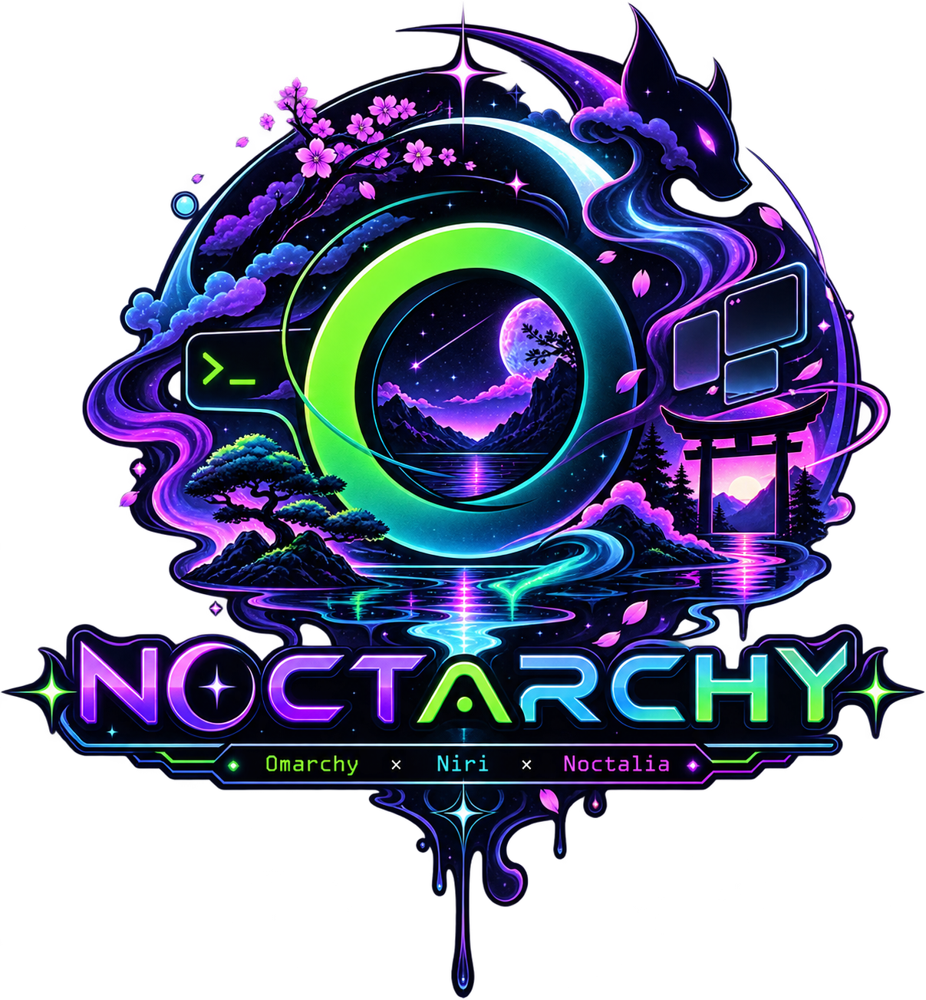

Omarchy × Niri × Noctalia
A column-based compositor where windows scroll vertically — no master/stack, no dwindle. Spring animations, gaps, shadows, and workspace tags out of the box.
Bar, notifications, OSD, launcher and lock screen — all native C++23, no Quickshell. A systemd user service that survives crashes and relogs.
omarchy-theme-set keeps working: a hook generates a Noctalia custom palette from each theme's colors.toml, patches Niri border colors live, and syncs the wallpaper. Toggle between palette-derived and wallpaper-generated bar colors from the themes menu.
Root, power, keybinds, themes with previews, updates, config — all themed from the live Noctalia scheme via noctarchy-fuzzel.
Every system update also pulls the remux and re-syncs your install — configs merge in place, your edits always win. No manual upgrading, ever.
Opt-in Noctarchy plymouth theme, one menu entry away. A libalpm splash guard re-applies it to any kernel installed later — no more stock splash surprises.
Prebuilt via chaotic-aur — EEVDF, BORE, LTS or real-time, one menu away. Limine's default entry follows by name, immune to snapshot churn.
A preflight verifies the whole next-login chain before logout — any failure rolls everything back so your machine stays usable stock Omarchy.
Omarchy required:
git clone https://github.com/deoxizn/noctarchy.git ~/.local/opt/noctarchy cd ~/.local/opt/noctarchy ./install.sh # add -y to skip prompts, --dry-run to preview
Running an older installation? One catch-up brings you current — new menus, self-updates, all of it:
git pull && ./sync.sh # once — after this, omarchy-update keeps everything current for you
Backing out is one command: ./uninstall.sh restores your backups and hands the shell back to omarchy.
| Binding | Action |
|---|---|
| SUPER+T | Terminal |
| SUPER+B | Browser |
| SUPER+E | File manager |
| SUPER+Shift+E | Editor (nvim) |
| SUPER+Space | Fuzzel launcher (quick) |
| SUPER+D | Noctalia launcher (full) |
| SUPER+Alt+Space | Noctarchy root menu |
| SUPER+K | Keybinding list (fuzzel) |
| SUPER+Shift+/ | Niri hotkey overlay |
| SUPER+Q | Close window |
| SUPER+Shift+Q | Power menu |
| SUPER+O | Overview |
| SUPER+N | Noctalia notifications |
| SUPER+Comma | Clear notifications |
| SUPER+Ctrl+L | Lock screen |
| SUPER+Ctrl+V | Clipboard history |
| Navigation | |
| SUPER+H/J/K/L | Focus left/down/up/right |
| SUPER+Arrow keys | Focus left/down/up/right |
| SUPER+Ctrl+H/J/K/L | Move window |
| SUPER+1-9 | Focus workspace |
| SUPER+Shift+1-9 | Move to workspace |
| SUPER+U/I | Workspace down/up |
| Layout | |
| SUPER+F | Maximize column |
| SUPER+Ctrl+F | Fullscreen window |
| SUPER+C | Center column |
| SUPER+R | Cycle column width |
| SUPER+Shift+R | Tabbed display |
| SUPER+Shift+Space | Toggle floating |
| SUPER+P | Focus floating |
| SUPER+Shift+P | Focus tiling |
| SUPER+[ / ] | Consume / expel from column |
| Apps (Omarchy-style) | |
| SUPER+Shift+B | Browser (xdg-open) |
| SUPER+Shift+F | File manager (nautilus) |
| SUPER+Shift+E | Editor (nvim) |
| Clipboard | |
| SUPER+C | Copy (wtype sends Ctrl+C) |
| SUPER+V | Paste (wtype sends Ctrl+V) |
| SUPER+X | Cut (wtype sends Ctrl+X) |
| Media / Hardware | |
| Volume keys | wpctl volume up/down/mute |
| Mic mute | wpctl source mute toggle |
| Play/Prev/Next | playerctl MPRIS controls |
| Brightness keys | brightnessctl up/down |
| Screenshots | |
| SUPER+Print | Select region → clipboard |
| Ctrl+Print | Full screen → clipboard |
| Alt+Print | Select region → save to ~/Pictures |
wtype to simulate the keypress instead. It works in most apps but may not work in every edge case.~/.config/omarchy/plugins/ silently disappear.| Stock Omarchy part | In Noctarchy | Replacement / notes |
|---|---|---|
| omarchy-shell (bar, notifications, OSD) | Removed | Noctalia provides all three |
| omarchy-shell lock screen | Removed | Noctalia lock via swaylock |
| omarchy-shell menus | Removed | Fuzzel suite noctarchy-*, themed from live Noctalia scheme |
| Hyprland config (Lua) | Removed | Niri KDL config replaces it |
Media keys (XF86Audio*) | Were dead, now rebound | noctarchy-media — controls whichever MPRIS player is currently playing |
| Clipboard (SUPER+Ctrl+V) | Was dead, now rebound | Noctalia clipboard |
Theme switching (omarchy-theme-set) | Works as before | Hook generates Noctalia custom palette from colors.toml, patches Niri borders, syncs wallpaper. Toggle bar source in themes menu. |
| Window management, workspaces, app binds | Changed | Niri scrollable tiling replaces dwindle/master |
Anything not listed here that shells out to omarchy-shell in your own scripts will also be dead — grep for it.